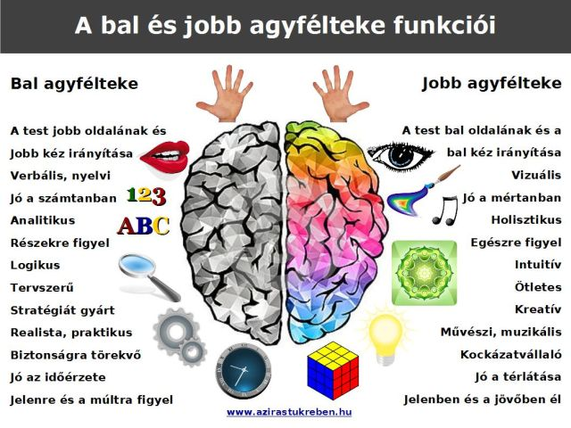

Bevezető gondolatok
Ez a weboldal elsősorban egy nagyobb beadandó munkának készül, de remélhetőleg, aki olvassa jobban megismer 1-2 hangszert és másfajta módszerét a hang lejátszásának.
Miért pont zene témában készült az weboldal?
Korábban már játszottam hangszeren és érdekel is a zene, ahogy sok más embert is, szóval egyrészt tapasztalat alapján, mert tetszik, másrészt meg a zenének különböző hatásai vannak az emberre. Ezalatt nem arra gondolok, hogy kinek mit kéne hallgatnia, mert nem erről van szó, hanem hogy a különböző zenei stílusok másfajta hangulatot válthatnak ki. Mindezek mellett a fő lényeg, hogy a zene jó terápiára is, mivel használható jó hatása miatt.

"A zenei észlelés nagyon szoros kapcsolatban áll az érzelmekkel. Képes az autonóm idegrendszer, valamint az immunrendszer működését befolyásolni."